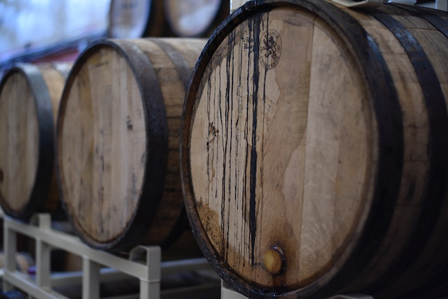

Servicios
Traslado de pasajeros
Ofrecemos traslados de pasajeros desde y hasta la terminal de Ómnibus y/o el Aeropuerto Internacional de Mendoza

Traslado a bodegas
Ofrecemos traslados a las mejores bodegas de Mendoza, a elección del pasajero o empresa, o por recomendación de Cuyo Travel
